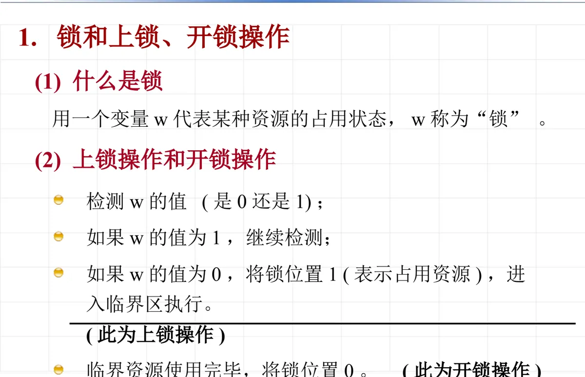
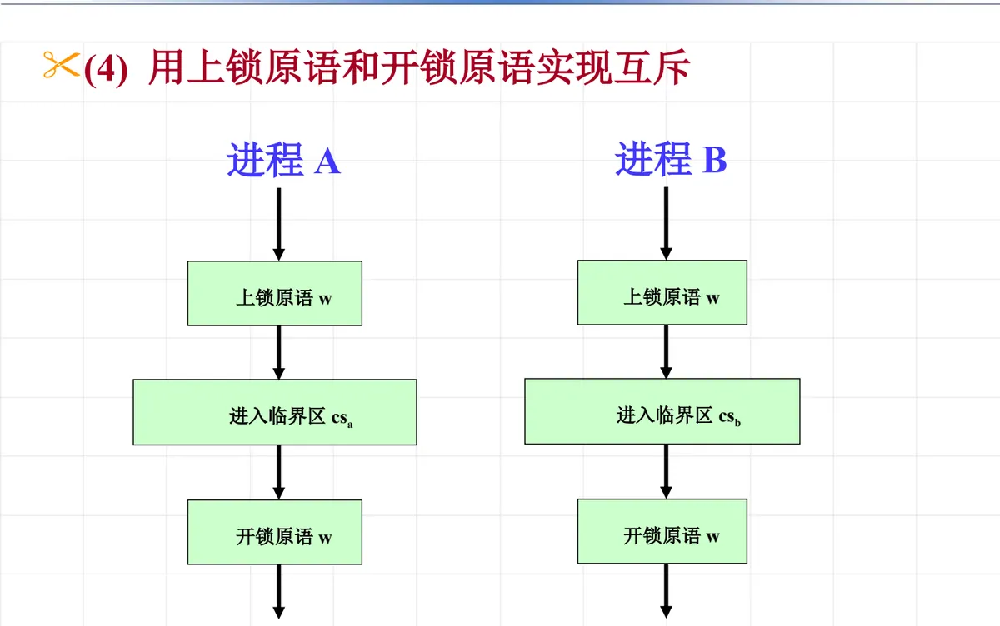
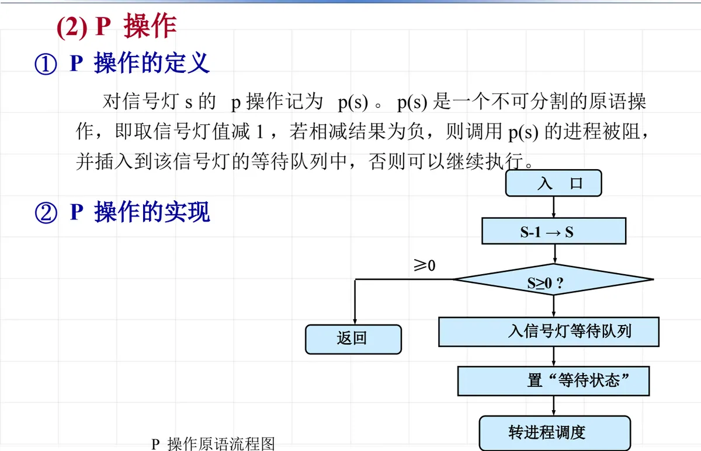
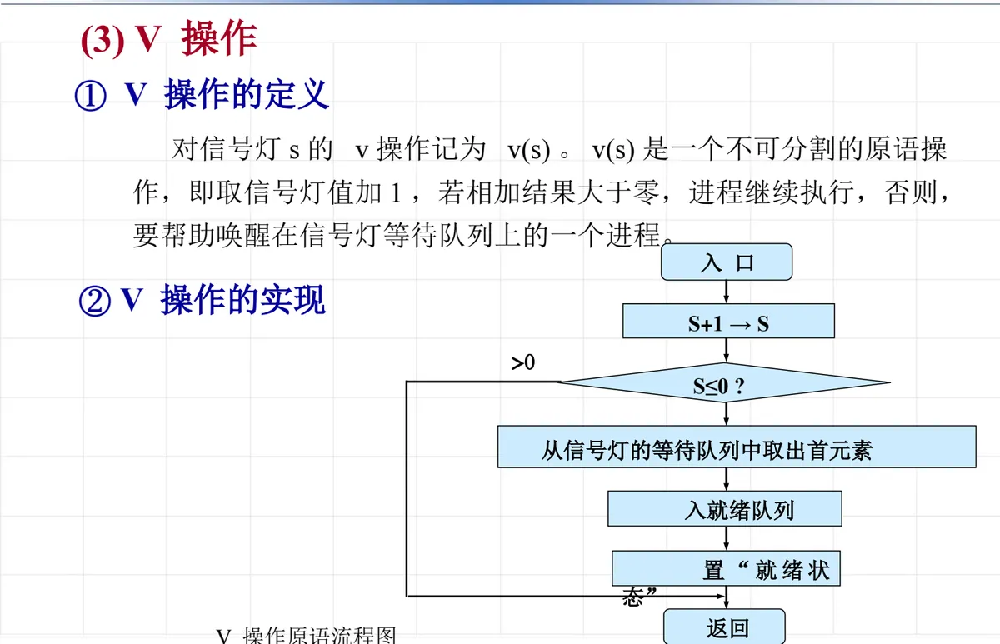

操作系统原理 · 第 4 章 进程及进程管理
4.5 进程同步机构
上一节说清了进程之间为什么会有互斥和同步的约束，这一节回答「凭什么实现这些约束」。操作系统为此提供的措施和方法统称为同步机构，最基础的两件工具是锁和信号灯（信号量）。下面先看锁——从自旋锁到普通锁，包括它绕不开的硬件原子指令问题，再看 Dijkstra 提出的信号灯与 P、V 操作。
1. 什么是同步机构
操作系统提供的、实现进程之间协作关系（同步和互斥）的措施和方法，称为同步机构。本课程讲的同步机构有两类：
- 锁；
- 信号灯（信号量）。
它们都要解决同一个问题：让若干进程在访问临界资源时能够互相等待，而这种等待又不能靠普通程序语句随随便便地实现——判断与修改锁变量这两步中间若被插入别的进程，互斥就失效了。
2. 锁和上锁、开锁操作
（1）上锁与开锁的含义
锁用一个锁变量 w 表示，取值为 0 或 1。进入临界区之前要先执行上锁操作，它的过程是：
- 检测 w 的值（是 0 还是 1）；
- 如果 w 的值为 1，继续检测（也就是等待／自旋）；
- 如果 w 的值为 0，将锁位置 1（表示占用资源），进入临界区执行——此为上锁操作。
临界资源使用完毕后，把锁位置 0——此为开锁操作。上锁与开锁必须成对出现，否则临界资源会被永久占用。

（2）上锁原语和开锁原语（spinlock 自旋锁）
自旋锁的上锁原语算法记作 lock，输入是锁变量 w，无输出。用高级语言写出来就是「忙等 + 置位」：
lock()
{
while (w == 1) ;
w = 1;
}它也可以写成带标号的测试—转移形式：在 test 处判断 w==1，是则 goto test（不断测试锁位的值），否则执行 w=1 完成上锁。相应地，开锁原语就是把锁变量 w 置为 0；它与上锁原语一样，必须作为不可分割的原语执行。
之所以叫自旋锁，是因为它在得不到锁时一直占着处理机反复测试——不释放 CPU，也不进等待队列。
3. 自旋锁绕不开的问题：锁变量 w 自身的互斥
自旋锁的锁变量 w 本身也是一个共享变量，怎么保证 w 自己的互斥访问？单纯的「判断 + 修改」两步在任何一台机器上都可能被打断，因此必须依靠硬件提供的原子操作。用汇编写出来是一段循环：
1: mov %0, [w]; 访问变量 w 的内存地址，取到寄存器
cmp %0, #1; 与立即数 1 比较
beq 1b; 已加锁则回到标号 1 自旋
mov [w], #1; 上锁其中 [w] 表示访问变量 w 的内存地址，%0 表示某个寄存器，#1 表示立即数 1。硬件可以保证的原子操作有两条：
- （1）单个硬件指令是原子操作，中断只会发生在指令边界；
- （2）内存总线一次地址对齐的读或写操作（1 到 N 个字节）是原子操作。
有了这两条，「读—比较—写」虽然跨越多条指令，也能通过下面的原子指令方案落到实处。
4. 用软件方法实现互斥：皮特森算法
不用特殊硬件指令、纯软件的办法也有，代表性的是皮特森算法（Peterson 算法），它可以解决两个进程的互斥问题。它使用两个全局变量：
flag[2]：表示进程 0 和 1 是否尝试进入临界区，初始值为 FALSE；turn：表示最终能进入临界区的进程编号（0 或 1）。
两个线程的代码完全对称：
线程 0：
flag[0] = TRUE; // 自己请求进入临界区
turn = 1; // 优先选择对方进入临界区
while ((flag[1] == TRUE) && (turn == 1)) ;
...... // 临界区代码
flag[0] = FALSE; // 退出临界区
线程 1：
flag[1] = TRUE;
turn = 0;
while ((flag[0] == TRUE) && (turn == 0)) ;
...... // 临界区代码
flag[1] = FALSE; // 退出临界区它的巧妙之处在于：每个进程先声称自己要进，再把优先权让给对方，于是两个进程同时伸手时一定有一个能进、另一个退让，不会互相僵持。
5. 用硬件交换指令实现互斥
如果硬件能够提供一条指令同时完成内存的读和写，互斥实现起来就很方便，这就是交换指令（ARM 上叫 swp，x86 上叫 xchg）。不过要注意：虽然一条指令完成了读写，但内存操作本身并不天然具有原子性，如果有多核 CPU 还是会被打断，因此必须要有 lock 锁住总线的功能。
（1）多核心处理器上的加锁与解锁
加锁：
cli + 禁止进程调度；
1: mov %0, #1;
lock xchg %0, [w];
cmp %0, #1; 判断是否已经加锁
beq 1b;
解锁：
mov [w], #0;
sti + 恢复进程调度；加锁前先关中断并禁止进程调度，用 lock xchg 原子地交换，交换回来的旧值若为 1 说明锁已被别人持有，回到标号 1 自旋；解锁时把 w 置 0，再开中断并恢复进程调度。（单核心处理器上不需要总线 lock，实现更简单。）
（2）ARM v6 之后的新机制：ldrex／strex
交换指令违背了 ARM 精简指令集的宗旨，并且 lock 总线导致自旋时整个系统总线效率很低。因此在 ARM v6 指令级之后引入了新的机制——用独占访问标记代替锁总线：
加锁：
1: ldrex %0, [w]; 标记该 cpu 核独占这个地址，并读 w 值到 %0
cmp %0, #1; 判断是否已经加锁
beq 1b; 等于 1 表示已经加锁，自旋
mov %0, #1;
strex %1, %0, [w]; 检查该 cpu 核是否仍然独占这个地址，
是则存储 %0 到 w（即 w 为 1），
同时赋值 0 到 %1 并清除独占标记；
否则赋值 1 到 %1，不改变 w 值
cmp %1, #0;
bne 1b; 存储失败则重新自旋
解锁：
mov %0, #0;
store %0, [w]; 将 w 清零这里 ldrex 读的同时给地址打上独占标记，strex 只有在标记仍然有效时才写入并返回 0，否则返回 1 让程序重试——这样既保证了「读—改—写」的原子性，又不必锁住整条总线。
6. 第二种锁：mutex 普通锁
自旋锁在等不到锁时一直占用 CPU，效率不高。第二种锁是 mutex 普通锁，它的特点是不占用 CPU、不自旋——等不到锁时主动让出处理机，进入等待队列。
（1）上锁原语 lock
输入为锁变量 w，无输出：
{
while (w == 1)
{
保护当前进程的 cpu 现场；
设置当前进程的状态为等待，并插入到 w 的等待队列；
转进程调度；
}
w = 1;
}（2）开锁原语 unlock
输入为锁变量 w，无输出：
{
if (w 的等待队列不为空)
{
移出等待队列首元素，插入到就绪队列；
置该进程为就绪状态；
}
w = 0;
}对照上一节的进程等待与唤醒原语可以看到，mutex 锁的等待与唤醒正是那两条原语的应用：上锁失败时把进程挂到 w 的等待队列上，开锁时唤醒队首进程并把它送回就绪队列。
7. 用上锁原语和开锁原语实现互斥
把上面的原语用到临界区上，互斥的实现就非常直观：进程 A 在进入临界区 csa 之前先执行「上锁原语 w」，出来时执行「开锁原语 w」；进程 B 对 csb 做同样的动作，两者共用同一个锁变量 w。

这正是后面所有同步手段的骨架：进入临界区前申请，离开临界区后释放。
8. 信号灯和 P、V 操作
1965 年，由荷兰学者 Dijkstra 提出信号灯机制（所以 P、V 分别是荷兰语 test（proberen）和 increment（verhogen）的首字母），它是一种卓有成效的进程同步机制。
（1）什么是信号灯
信号灯是一个确定的二元组 (s, q)：s 是一个具有非负初值的整型变量，q 是一个初始状态为空的队列。操作系统利用信号灯的状态对并发进程和共享资源进行控制和管理。
- s 是整型变量，代表可用资源实体的数量；
- s > 0 时，表示有可用资源，进程执行（绿灯）；
- s <= 0 时，表示没有可用资源，进程停止执行（红灯）。
注意：创建信号灯时，应准确说明信号灯 s 的意义和初值，而且这个初值绝不能为负值。
（2）P 操作
对信号灯 s 的 P 操作记为 p(s)。p(s) 是一个不可分割的原语操作，即取信号灯值减 1，若相减结果为负，则调用 p(s) 的进程被阻，并插入到该信号灯的等待队列中，否则可以继续执行。
它的实现流程是：入口 → 执行 S-1 → S → 判断 S ≥ 0 ?：若成立则返回，进程继续执行；若不成立则置「等待状态」、入信号灯等待队列、转进程调度。

（3）V 操作
对信号灯 s 的 V 操作记为 v(s)。v(s) 是一个不可分割的原语操作，即取信号灯值加 1，若相加结果大于零，进程继续执行；否则，要帮助唤醒在信号灯等待队列上的一个进程。
它的实现流程是：入口 → 执行 S+1 → S → 判断 S ≤ 0 ?：若不成立（即 S > 0）则返回；若成立则从信号灯的等待队列中取出首元素、入就绪队列、置「就绪状态」，然后返回。

P、V 两个操作的语义要合起来理解：P 是「申请一个资源，申请不到就等着」，V 是「释放一个资源，如果还有人在等就把其中一个唤醒」。因为两者都是原语，判断和修改信号灯值的过程中不会被插入其他进程，互斥与同步才得以正确实现——这也正是下一节要展开的内容。
本节小结
- 同步机构是操作系统提供的实现进程协作关系（同步和互斥）的措施和方法，主要有锁和信号灯（信号量）两类。
- 上锁操作：检测锁变量 w，为 1 则继续检测，为 0 则置 1 并进入临界区；使用完毕把 w 置 0 即开锁。上锁、开锁都必须成对并作为原语执行。
- 自旋锁（spinlock）的上锁原语写作
while (w == 1) ; w = 1;，得不到锁时一直占用 CPU 自旋。 - 锁变量 w 本身也是共享变量，其互斥要靠硬件原子操作：单个硬件指令是原子的、中断只发生在指令边界；地址对齐的读或写操作是原子的。
- 纯软件方法有皮特森算法：用 flag[2] 表示是否请求进入、turn 表示让给谁，两个进程对称地先请求再退让，可解决两个进程的互斥。
- 硬件交换指令（ARM 的 swp、x86 的 xchg）配合 lock 锁总线可实现原子交换；多核下加锁前要关中断并禁止进程调度；ARM v6 之后改用 ldrex／strex 的独占标记机制，避免锁总线导致的总线效率下降。
- mutex 普通锁不占用 CPU、不自旋：上锁失败时保护现场、置等待状态并挂入 w 的等待队列后转调度，开锁时把等待队列首元素移入就绪队列再置 w 为 0。
- 信号灯是二元组 (s, q)，s 为非负初值的整型变量、代表可用资源数量，q 为初始为空的队列；s>0 表示有资源（绿灯），s≤0 表示无资源（红灯），初值绝不可为负。
- P 操作把 s 减 1，结果为负则阻塞并插入等待队列；V 操作把 s 加 1，结果不大于 0 则唤醒等待队列上的一个进程。P 申请资源、V 释放资源，都必须是不可分割的原语。